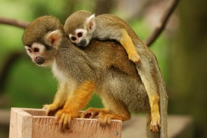

Squirrel Monkey
The common squirrel monkey is polygynous with a multiple-male, multiple-female group structure.
- Scientific Name: Saimiri sciureus
- Average Height: 9.8 to 14 inches
- Average Lifespan: 20 years
- Habitat: Dense tropical rainforests
Squirrel monkeys are arboreal (they live on the trees) animals. They spend 99% of their lives in the trees. They are also omnivores; they eat different types of flowers, leaves, buds, nuts, insects, lizards and eggs.